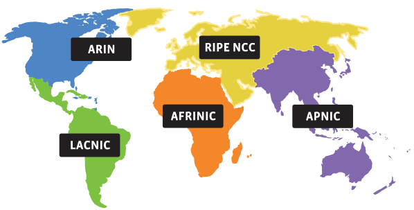
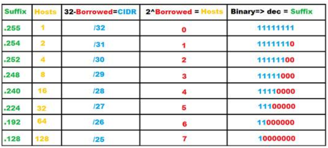

*[RIR]: Regional Internet Registry
IPv4 ve IPv6
IPv4 adresleri tükendiği için, artık IPv6 adresleri dağıtılmaktadır. Uzunca bir süre daha ikisini birlikte kullanmak zorundayız.
IPv4 adresleme sisteminde $2^{32}$ IP adresi kullanılabilirken, IPv6 adreslemesinde $2^{128}$ adet IP adresi kullanılabilmektedir. Aşağıda bu iki sayı açık olarak yazılmıştır:
- IPv4 adres sayısı: $4.294.967.296$ (yaklaşık 4,3 milyar)
- IPv6 adres sayısı: $340.282.366.920.938.463.463.374.607.431.768.211.456$
Bu ders içerisinde IP ifadesi her kullanıldığında, IPv4 anlaşılmalıdır. Bu ders açısından ikisi arasındaki en önemli fark; birisinin 32, diğerinin ise 128 bit olmasıdır. IP hesaplamaları tamamen aynıdır. Hesap mantığını anlamak için v4 hesapları -kısa olduğu için- daha iyi olacaktır. Sonrasında aynı hesapları v6'da da yapabilirsiniz.
IP Adresi ve Hesaplamaları
32 bit uzunluğa sahip olan IP adresi 2 temel bileşene sahiptir: 1. Ağ tanımlayıcı 2. Host tanımlayıcı

IP bileşenleri
host: Bir ağ içerisinde IP atanabilen ve kendisinin ağa bağlanma ihtiyacı olan bilgisayar, yönlendirici, güvenlik duvarı, akıllı saat, cep telefonu, vb. cihazların tümüne host denir.
IP adresinin bu iki bileşeni hesaplanırken alt ağ maskesine ihtiyaç duyulur. Temel olarak alt ağ maskesi IP adresinin sınıfına göre belirlenir. IP adresleri 32 bitin sekizerli olarak gruplandırılması ve decimal olarak gösterilmesi şeklinde olur. Bu 8 bitlik grupların her birine oktet denir. Her oktet birbirinden nokta ile ayrılır.

Görsel kaynağı: https://www.cloudns.net/blog/what-is-ipv4-everything-you-need-to-know/
Bir IP adresinin bağlı olduğu sınıf ilk oktetinden anlaşılır.

IP sınıfları
ÖRNEK : 16 tane IP adresini bölüyoruz. (${2^4}$ bit )\ \ XXX -------------------------------------- IMAGE ----------------------------------- XXX\ \ NOT : Ağlardaki bilgisayar sayıları(kullanılabilecek ip sayıları) belirlenirken maksimum kapasite 2'nin kuvveti ${2^n}$ alınarak belirlenir.
ÖRNEK : Bir şirketin iki farklı şubesinde 120 ve 280 adet bilgisayar kullanılmaktadır. Bu şirketler için optimal ağ büyüklüklerini hesaplayınız.
-
$120 => 2^n = 2^7 => 128$
-
$280 => 2^n = 2^9 => 512$
NOT : Host tanımlayıcısı kısmında belirtilen bitlerde elde edilebilecek en büyük sayı o ağda kullanılabilecek IP adresi sayısıdır. Her ağın ilk IP adresi [\"ağ adresi\"]{.underline} ve son IP adresi [\"yayın adresi\"]{.underline} olarak kullanıldığından her ağda kullanılabilecek host sayısı IP sayısından 2 eksiktir.
-
Host bitleri : n tane
-
Ağdaki IP adresi : $2^n$ tane
-
Ağda kullanılabilecek host sayısı $2^n-2$
ÖRNEK : 10.9.8.0 IP adresinin 30. bitten sonrasının bulunduğunu varsayalım. Alt ağ IP adresinin kullanım amacına göre yazalım.
..... ..... 30 bit 2bit
IP sayısı $2^2=4$ tane Host sayısı $2^2-2=2$ tane
1.IP adresi 10.9.8.0 -> Ağ adresi 2. ve 3. IP adresi 10.9.8.1 ve 10.9.8.2 -> Hostlar için kullanılabilir 4. IP adresi 10.9.8.3 -> Yayın adresi
NOT :
Ağ sayısı Host sayısı Toplam host sayısı
1 16 14 2 8 $2(8-2) =12$ 4 4 $4(4-2) = 8$
IANA: IP Dağıtan Kuruluş
https://www.iana.org/ web sitesinde faaliyetleri hakkında bilgi alınabilir.

IANA tarafından yetkilendirilen bölgesel internet kayıtçıları (RIR)
IANA, IP adreslerini /8 şeklinde RIR'lara dağıttı.

Görsel kaynağı: https://www.iana.org/assignments/ipv4-address-space/ipv4-address-space.xhtml
IANA elindeki tüm IPv4 adresleri 2011'de bitti.

Görsel kaynağı: https://en.wikipedia.org/wiki/IPv4_address_exhaustion
IP Sınıfları
IP'nin ilk tasarlandığı sıralarda ortaya çıkmış bir kavramdır. Kurumlarda IP adresleri tahsis edilirken ihtiyaca göre optimal sayıda verebilmek için tasarlanmıştır. En büyük IP sınıfı A sınıfı, en küçük IP sınıfı C sınıfıdır.

Görsel kaynağı: https://medium.com/networks-security/tricks-to-remember-five-classes-of-ipv4-484c191678fb
- A sınıfı: İlk biti 0'dır. İlk oktet 0-127 arasında olur. Varsayılan ağ maskesi 255.0.0.0'dır. A sınıfı bir IP adresinde $2^{24}$ tane IP oluşturulabilir.
- B sınıfı: İlk iki biti 10 şeklindedir. Ondalık formda ilk okteti 128-191 şeklindedir. Varsayılan alt ağ maskesi 255.255.0.0'dır. B sınıfı bir IP adresinde $2^{16}$ tane IP oluşturulabilir.
- C sınıfı: İlk üç biti 110 şeklindedir. Ondalık formda ilk okteti 192-223 arasındaki adreslerdir. Varsayılan alt ağ maskesi 255.255.255.0'dır. B sınıfı bir IP adresinde $2^{8}$ tane IP oluşturulabilir.
- D sınıfı: İlk dört biti 1110'dır. Ondalık formda ilk okteti 224-239 arasındadır. Multicast (Çoklu yayın) olarak bilinir. Normalde hostlarda kullanılmaz.
- E sınıfı: İlk okteti, 240-248 ile başlar. Deneysel amaçlar için rezerve edilmiştir. Normalde hostlarda ve ağlarda kullanılmaz.

Görsel kaynağı: https://www.routerfreak.com/definitive-guide-ip-address-classes/
Peki neden böyle bir sınıflandırma yapıldı?
Ağ biti Host bitleri Her ağdaki IP sayısı
--------- --------------- ----------------------
8 24-\>A sınıfı $2^{24}$ tane IP
16 16-\>B sınıfı $2^{16}$ tane IP
24 8-\>C sınıfı $2^8$ tane IP
ÖRNEK : 132.x.x.x IP adresi B sınıfıdır. 132.45.x.x IP adresinin ilk iki okteti ağ tanımlayıcısı son iki oktet host tanımlayıcısıdır. $2^16$ tane IP alabilir.
112.x.x.x IP adresi A sınıfıdır. $2^{24}$ tane IP alabilir.
193.140.253.x IP adresi C sınıfıdır. $2^8$ tane IP alabilir.
Özel IP Adresleri(Private IP Blocks)
İnternette kullanılmayan IP adresleridir. İnternet üzerinde hiçbir yönlendirici tarafından yönlendirilmeyen IP adresleridir. Bu adreslerin kullanım amacı test uygulamaları ve NAT uygulamaları gibi durumlardır. IP adresleri tükendiğinden kurumlarda kullanılan bilgisayarların tamamına yetmemektedir. Bu nedenle günümüzde kurumların iç ağlarında özel IP adresleri istenilen sayıda kullanılabilir.
-
10.0.0.0/8 ->$2^{24}$ IP adresi
-
172.16.0.0 ->$2^{20}$ IP adresi
-
192.168.0.0 ->$2^{16}$ IP adresi
NAT(Network Address Translation)
XXX -------------------------------------- IMAGE ----------------------------------- XXX\
Ağ Maskesi (Netmask)
Ağ maskesinin iki temel görevi vardır: 1. Ağın büyüklüğünü belirtmek 2. Ağın nerede başladığını hesabında kullanmak

Görsel kaynağı: https://www.bestpickreports.com/blog/post/6-painting-hacks-with-tape/
IP adreslerinin bitlerden oluştuğunu ve iki bileşeni olduğunu biliyoruz. Bu iki bileşenin hangi bitten ayrılacağını bulmak için ağ maskesi kullanılır. IP adresi ile beraber, ağ maskesinin kullanılması zorunludur.


Windows'ta iki farklı yerden IP yapılandırması yapılabiliyor. Görsel kaynağı: https://pureinfotech.com/set-static-ip-address-windows-10/

Görsel kaynağı: https://www.trance-cat.com/electrical-circuit-calculators/en/subnet-mask-calculator.php
Ağ adresi
Ağ maskesi herhangi bir IP adresi ile ikilik sistemde çarpılırsa(ve işlemi) çıkan sonuç ağın adresini verir. Bu sayede, ağın nerede başladığı bulunmuş olur.
ÖRNEK :
-
IP : 192.168.1.75
-
Ağ maskesi : 255.255.255.0
-
11000000.10101000.00000001.01001011
-
11111111.11111111.11111111.00000000
-
11000000.10101000.00000001.00000000
-
Ağ adresi 192.168.1.0
Ağ adresi ve yayın adresinin pratik hesabı
IP adresinin bölündüğü biti biliyorsak; IP adresinde bu bitten sonrası 1 yapılırsa, yayın adresini buluruz. Aynı bitleri 0 yaptığımızda ise ağ adresini buluruz.
CIDR Notasyonu
Elimizde sadece IP adresleri olduğunda ağla ilgili yeterli bilgiye ulaşamadığımızı, ilave olarak IP adresinin hangi bitten bölündüğünü bilmemiz gerektiğini biliyoruz. Bunun için ağ maskesine alternatif olarak CIDR Notasyonu kullanılmaktadır. Bu gösterim şeklinde IP adresinin sağına \"/\" işareti konulup bölünen bit numarası yazılır.
ÖRNEK :
-
192.168.1.75 IP adresli ve 255.255.255.0 ağ maskesine sahip bir cihazın CIDR notasyonu 192.168.1.75/24 şeklindedir.
-
10.1.0.0 ve 255.0.0.0 ise 10.1.0.0/8 olarak gösterilir.
-
10.9.8.0 ve 255.255.255.128 ise 10.9.8.0/25 şeklinde gösterilir. (128 ikilik tabanda 10000000 şeklinde gösterildiğinden soldan 25 tane 0 vardır.)
Alt Ağa Bölme
IP adresi ve ağı temsil eden bit sayısı belirli olan bir ağ birden fazla küçük ağlara bölünebilir. Alt ağa bölme işlemi alt ağ maskesinde bir bit kaydırılarak yapılır. Bu şekilde $2^n$ tane alt ağ bölme işlemi yapılabilir.
ÖRNEK :
a) 10.0.0.0/24 ağını iki ayrı ağa bölünüz.
b)Yeni oluşturulan ağlar için 10.0.0.100 ve 10.0.0.150 IP adreslerinin aynı ağda olup olmadıklarını hesaplayın. (İpucu : Ağ adresi = IP x Ağ maskesi)
c)128 IP'li ağların her birini ikiye bölünüz.
[Çözüm :]{.underline}
a)
-
Ağ : 10.0.0.0/24
-
Ağ maskesi : 255.255.255.0 (24 tane 1, 8 tane 0 var. $2^8$ tane IP var)
-
Ağ maskesi : 11111111.11111111.11111111.00000000 ağ maskesinde 1 bit sağa kaydırdığımızda 25 tane 1, 7 tane 0 olacaktır. $2^7=128$ tane IP elde edilir.
1 bit kayarsa $2^1=2$ alt ağ, 2 bit kayarsa $2^2=4$ alt ağ, .... ,n bit kayarsa $2^n$ alt ağ elde edilebilir.
10.0.0.0/25 notasyonuna sahip bir ağda 1.alt ağ 10.0.0.0 IP adresiyle başlar. 128 adet IP tanımlanır. Son IP 10.0.0.127 olur. 2. alt ağ ise 10.0.0.128 IP adresinden 10.0.0.255 IP adresine kadar 128 adet IP alabilir.
Ağ adresi Yayın adresi Ağ maskesi IP sayısı Host sayısı
1.ağ 10.0.0.0/25 10.0.0.127 255.255.255.128 128 126 2.ağ 10.0.0.128/25 10.0.0.255 255.255.255.128 128 126
b)
00001001.00000000.00000000.01100100 = 10.0.0.100
ağ maskesi: 11111111.11111111.11111111.00000000 = 10.0.0.128 00001001.00000000.00000000.10010110 = 10.0.0.150
Son oktetleri farklı olacağından aynı ağda değillerdir.
c)
1.ağ 2.ağ
10.0.0.0/25 10.0.0.128/25
Ağ maskesi 255.255.255.128
1111111.11111111.11111111.10000000
Yeni oluşan ağ maskesi 255.255.255.192\ \ XXX --------------------- TABLO ------------------------ XXX\ \ \ \ XXX --------------------- TABLO ------------------------ XXX\ \ \ \ XXX --------------------- TABLO ------------------------ XXX\ \ \ \ XXX --------------------- TABLO ------------------------ XXX\ \ SORU : 10.9.6.0/25 ağını 4 ayrı ağa bölünüz.
Ağ maskesi 255.255.255.0 11111111.11111111.11111111.0
Yeni ağ maskesi : 11111111.11111111.11111111.11100000 ($2^5=32$ IP var.) : 255.255.255.224
\ XXX --------------------- TABLO ------------------------ XXX\ \ ÖRNEK : 10.0.0.0/22'yi 4 alt ağa bölünüz.
11111111.11111111.11111100.00000000 $2^{10}=1024$ tane IP var.
Ağ maskesi : 255.255.252.0
Yeni alt ağ maskesi : 255.255.255.0(2 bit kaydı.$2^{8}=256$ IP var.) d Yeni CIDR gösterimi -> 10.0.0.0/24 olmalıdır.
10.0.0.0 -> 10.0.0.255
10.0.1.0 -> 10.0.1.255
10.0.2.0 -> 10.0.2.255
10.0.3.0 -> 10.0.3.255
ÖRNEK : /17 şeklinde gösterilen ağın maskesi nedir?
11111111.11111111.10000000.00000000 = 255.255.128.0 şeklindedir.
ÖRNEK : 10.10.0.0 ve 255.255.0.0 şeklindeki ağda kaç host olabilir?
$2^{16}-2$ adet host olabilir.
NOT : Özel IP ile ??? 127 ile başlayan IP ler kullanılamazlar. Localhost : 127.0.0.1 bilgisayarın kendisini temsil eder.
169.254.0.0 Windows işletim sisteminin IP alınamadığında kendi IP bloğundan otomatik olarak verdiği IP adresidir.
ÖRNEK : Bir şirkete 192.168.100.0/24 şeklinde IP aralığı tahsis edilmiştir. Şekilde sistem yöneticisi ağdaki aşırı yayın trafiğinin sorun çıkardığını düşünerek ağı alt ağlara bölmek istiyor. Birimlerin PC sayısı aşağıdaki gibidir. Teknik birim=70, Pazarlama=40, Muhasebe=20, İdari birim=25\ \ XXX -------------------------------------- IMAGE ----------------------------------- XXX\ \ \
Ağ Geçidi IP Adresleri
Her ağ için ilk IP adresi ağ adresi, son IP adresi yayın adresi olduğunu biliyoruz. Kural olmamakla birlikte genel teamüllere göre ağ adresinden sonraki ilk IP adresi(kullanılabilecek ilk host adresi) ağ geçidi olarak belirlenir. Herhangi bir host adresi ağ geçidi olarak belirlensede hiçbir problem olmaz.
NOT : IP adresinin ve ağın son IP adresi değiştirilemez.
NOT : Ağ geçidi IP adresi herbir ağın doğrudan bağlı olduğu yönlendirici arayüzünde(interface, ara birim, ethernet kartı, NIC(Network Interface Card)) tanımlı olan IP adresi olmak zorundadır.
Günümüzde kullanılışı :\ \ \ XXX -------------------------------------- IMAGE ----------------------------------- XXX\ \ \ [Soruya gelirsek : ]{.underline}\ \ XXX --------------------- TABLO ------------------------ XXX\ \ Ağ adresi : 192.168.0.0
Yayın adresi : 192.168.100.127\ \ XXX --------------------- TABLO ------------------------ XXX\ \ \ \ XXX --------------------- TABLO ------------------------ XXX\ \ \ \ XXX --------------------- TABLO ------------------------ XXX\ \ \ \ XXX --------------------- TABLO ------------------------ XXX\ \ Alt ağ maskesi ise teknik:255.255.255.0,
pazarlama:255.255.255.192,
muhasebe:255.255.255.224,
idari:255.255.255.255 ??? şeklindedir.
ÖRNEK : 10.50.100.200/25 şeklinde IP adresi tahsis edilmiş bir bilgisayarın ağ adresi ve yayın adresi nedir?
32-25=7 olduğundan $2^7 =128$ tane IP var.
10.50.100.200
x 255.255.255.128
10.50.100.128 ağ adresi
10.50.100.255 yayın adresi
ÖRNEK : Aşağıdaki bilgisayarlardan hangileri ağ geçidine ihtiyaç duymadan haberleşirler.
::: center
[Ağ adresi]{.underline}
a\) 10.0.0.120/25 10.0.0.0 -128
b\) 10.0.0.121/24 10.0.0.0 -256
c\) 10.0.0.254/24 10.0.0.0 -256
d\) 10.0.0.1/24 10.0.0.0 -256
e\) 10.0.0.253/25 10.0.0.0 -128
:::
NOT : X'in Y ile aynı ağda olup olmadığını anlamak için X bilgisayarı Y nin IP adresiyle kendi ağ maskesini çarpar. Kendi ağ adresiyle karşılaştırır.
A'nın B ile haberleşmesi :
B'nin IP adresi 10.0.0.121
A'nın ağ maskesi x 10.0.0.128
10.0.0.0
Çıkan sonuç A'nın ağ adresiyle aynı olduğundan haberleşirler.
A'nın C ile haberleşmesi :
C'nin IP adresi 10.0.0.254
A'nın ağ maskesi x 10.0.0.128
10.0.0.128
Çıkan sonuç A'nın ağ adresiyle aynı olmadığından haberleşemezler.